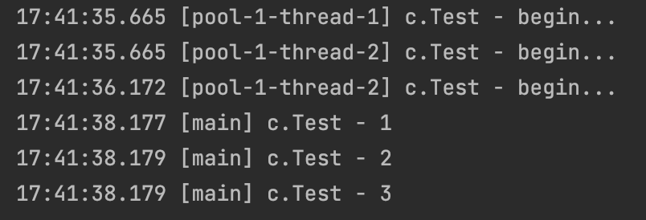
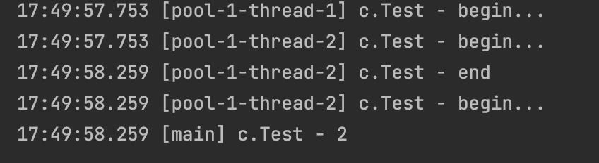

JUC-ThreadPoolExecutor
7.并发工具：线程池
7.2 ThreadPoolExecutor
ThreadPoolExecutor是JDK提供的线程池实现，实现了ExecutorService接口。
7.2.1 线程池状态
ThreadPoolExecutor用int的高3位表示线程池状态，低29位表示线程数量。
| 状态 | 高3位 | 接收新任务 | 处理阻塞队列任务 | 说明 |
|---|---|---|---|---|
| RUNNING | 111 | Y | Y | 线程池对象被创建，进入RUNNING状态 |
| SHUTDOWN | 000 | N | Y | 调用shutdown()方法，一种温和的停止，不会接收新任务，会在处理完阻塞队列任务后停止 |
| STOP | 001 | N | N | 调用shutdownNow()方法，一种暴力的停止，中断正在执行的任务，并抛弃阻塞队列任务 |
| TIDYING | 010 | / | / | 一种过渡状态，任务全部执行完毕，活动线程为0，即将进入终结状态 |
| TERMINATED | 011 | / | / | 终结状态 |
从数字大小上比较：TERMINATED > TIDYING > STOP > SHUTDOWN > RUNNING，因为高3位第1位的1表示负数，所以RUNNING的111是最小的。
将线程池状态存储在一个原子变量ctl中，目的是将线程池状态和线程个数合二为一，这样就可以用一次CAS原子操作进行赋值：
1 | //c为旧值，ctlOf返回结果为新值 |
7.2.2 创建线程的方式
主要可以分为两类：
- 使用JDK提供的Executor中的工厂方法
- 利用ThreadPoolExecutor创建（推荐）
7.2.2.1 通过ThreadPoolExecutor创建
1 | public ThreadPoolExecutor(int corePoolSize, //最大核心线程数目 |
- 救急线程
比如现有一个线程池，corePoolSize = 2，maximumPoolSize = 3，即核心线程最多为2个，救急线程有3-2=1个。阻塞队列size = 2。现在核心线程1执行任务1，核心线程2执行任务2，任务3和任务4进入阻塞队列等待。此时又来了任务5，因为队列已满，所以创建了救急线程1来执行任务5。等到任务5执行完毕，且过了救急线程的生存时间后，就会释放该救急线程，它不会去执行阻塞队列里面的任务。
和之前自定义线程池不一样的是，只有当核心线程用完，阻塞队列已满，救急线程也用完后，才会执行拒绝策略。
救急线程创建的前提：阻塞队列选择了有界队列，那么当任务超过队列大小时，会创建maximumPoolSize-corePoolSize数目的救急线程。
- 拒绝策略
如果线程达到maximumPoolSize，且仍有新任务进来，就会执行拒绝策略。JDK提供了4种拒绝策略：
- AbortPolicy：默认策略，让调用者抛出
RejectedExecutionException异常。 - CallerRunsPolicy：让调用者运行任务。
- DiscardPolicy：放弃本次任务。
- DiscardOldestPolicy：放弃队列中最早的任务，本任务取而代之。
7.2.2.2 通过Executors以及其衍生方式创建
可以分为4种方法：
- newFixedThreadPool 固定大小线程池
创建一个固定大小的线程池，核心线程数==最大线程数，即没有救急线程。阻塞队列是无界的，可以放任意数量的任务。线程不足，有可能导致饥饿现象。适用于任务量已知，相对耗时的任务。
- newCachedThreadPool 带缓冲线程池
核心线程数为0，最大线程数是Integer.MAX_VALUE，即创建的线程全是救急线程。救急线程的空闲生存时间是60s，即60s后可以回收，且救急线程可以无限创建。
使用SynchronousQueue实现阻塞队列，特点是队列没有容量，没有线程来取任务的时候，是无法存入任务的。（存任务的线程会一直阻塞，直到有线程来取任务，才能把任务放入队列，一手交钱一手交货）
整个线程池表现为，线程数会根据任务量不断增长，没有上限，当任务执行完毕，空闲60s后释放线程。适合任务数比较密集，但每个任务执行时间短的情况。
- newSingleThreadExecutor 单线程线程池
希望多个任务排队执行，线程数固定为1，任务数多于1时，会进入无界队列排队。任务执行完毕，这唯一的一个线程不会被释放。
- newScheduledThreadPool 任务调度线程池
有时候我们需要任务过几秒再执行，或者每隔几秒就要执行一次，就可以使用这种任务调度线程池。
1 | public static void main(String[] args) throws Exception{ |
哪怕第一个任务操作的时间很长，也不会影响到另一个任务的延时执行，两个任务都在1秒后完成。
以一定时间间隔重复执行任务scheduleAtFixedRate()：
1 | log.debug("start"); |
如果任务本身的操作时间超过等待间隔，比如任务中sleep了2s，间隔为1s，那么每2s会执行一次任务，即每次任务会紧挨着执行。
还有另一个方法scheduleAtFixedDelay()：
1 | log.debug("start"); |
同样是任务中sleep2s，间隔1s，这个方法会让任务每3s执行一次，即这个delay是从上一次任务结束开始算。
7.2.3 提交任务
1 | //提交任务task 用保护性暂停接收另一个线程返回的结果 用返回值Future获得任务执行结果 |
1 | //提交tasks中所有任务 |
输出：

1 | //提交tasks中所有任务 哪个任务先成功执行完毕 返回此任务执行结果 其他任务取消 |
输出：

7.2.4 正确处理线程池异常
对所有线程池来说，如果调用execute() 时出现异常，会被抛出，显示在控制台。如果调用submit()时出现异常，什么都不会输出。所以有两种方法处理异常：
- 自行主动try catch处理异常：
1 | pool.submit(()->{ |
submit()的参数不用Runnable，用Callable配合Future，即在Lambda表达式里加上一个返回值，让它从Runnable变为Callable：
1 | Future<Boolean> f = pool.submit(() -> { |
如果没有异常，就会返回result: true，如果有异常就会被正确捕获。